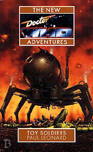

|
Toy Soldiers
|
BASIC PLOT DOCTOR COMPANIONS MATERIALISATION CIRCUIT Pg 29 Breslau, Germany, 1919 (although, as with the above, this happens off-screen) Pg 36 A quiet orchard a few kilometers away from Septangy. Pg 98 In the Universal Toy Factory office. Pg 232 On Q'ell. Pg 241 Mrs Sutton's house in Britain. Pg 242 Many, many times returning all the combatants in exactly the way that the Doctor couldn't at the end of The War Games. PREPARATORY READING CONTINUITY REFERENCES Pg 91 There's a mention of Oolian Brandy. We heard of the Oolians in Original Sin. Pg 126 Brief reference to Ace. Pg 145 "I don't care if his girlfriend's President of the Solar System." This post does exist in Roz's time, as kind of implied in Original Sin, even if there is an Empress above him. It also vaguely reflects upon Guardian of the Solar System from The Daleks' Master Plan. Pg 161 "She wanted to be able to watch the holovids, to ride a flitter over the parkland tops of the Overcity, to sit in her slobby apartment drinking a couple of three-packs of Ice Warrior." The Overcity from Original Sin and the Ice Warriors from The Ice Warriors. The fact that they would be a brand of beer in the thirtieth century actually makes perfect sense. Pg 163 Reference to the Undercity, from Original Sin. Pg 165 "And I'm the first cousin of the Empress of All Earth." Whom we meet in So Vile a Sin. Pg 177 "When Benny woke up there was a gun pointing at her head [...] 'Ace?' she hazarded." By far the funniest line in the book. Pg 186 "Come on, Manda. We've got work to do." Survival. Pg 207 "I know of a culture where machines are accepted on equal terms with other beings; you could go there." Nice bit of foreshadowing of The Also People. Pg 213 "She jolted her head aside, sprang up, ready to deliver a rabbit-punch to the Q'ell's thoracic hinge. As far as she knew, it was the best way of knocking out an insectoid." She knows this from her experiences in Birthright. Pg 222 Chris gets to yell "Adjudication service!" He's in it from Original Sin, but it goes right back to Frontier in Space. Pg 226 "The TARDIS will materialize inside itself." As in Logopolis. "'The Cloister Bell,' she said softly after a moment." From Logopolis, but Roz and Chris heard it in Sky Pirates!, hence they know what it is. Pg 227 "'DOCTOR,' boomed the Recruiter. 'I CAN'T LOCATE THE ARTON ENERGY SIGNATURE WHICH YOU DESCRIBED." From The Deadly Assassin. And did you spot that we'd refer you to Continuity Cock-Ups at the point? Pg 233 "She remembered Zamper, remembered Roz's hand on the garage door," Zamper, you will be unsurprised to note, but it's actually a really good piece of inter-book continuity. OLD FRIENDS AND OLD ENEMIES NEW FRIENDS AND NEW ENEMIES Josef Tannenbaum, Bertoldt Schneider Gabrielle Govier. Amalie Govier. Henri and Jean-Pierre. Mrs Charlotte Sutton. Carrie. Roger. Ginny, the maid. Madame Segovie, who is really called Ellie Collier. Mrs Kelly, a landlord. Sergeant Gebauer. Oni. Freeneek. Flight Sergeant Purdeek. Vee, Lil and Barbara (no, not that one). Sergeant Kelvine. Martineau. Monsieur Parmentier.
CONTINUITY COCK-UPS PLUGGING THE HOLES [Fan-wank theorizing of how to fix continuity cock-ups] FEATURED ALIEN RACES Ajeesks, who are rabbit-like, and Kreetas, which have blue skin and huge, black eyes. Here be Ogrons. Suddenly, at Page 190, walking skeletons, who are actually the real inhabitants of Q'ell, looking rather like humanoid locusts with exoskeletons. The Ceracai are mentioned, but they live half a galaxy away and haven't fought a serious war for centuries. FEATURED LOCATIONS Pg 9 The planet Q'ell. Pg 9 Breslau, Germany, 12th February 1919. Pg 15 Septangy, in Provence, France, 26th March 1919. Septangy, which doesn't actually exist, is near Touleville. Pg 68 Britain, near Sullivan Road in Bristol. Pg 70 The Universal Toys Factory. Pg 141 Touleville, France Pg 162 On a train on the way to Paris. Pg 163 Macon, France. Pg 216 Above Bristol and heading downwards at speed. Not the best location to be in, actually. IN SUMMARY - Anthony Wilson |
|
 |